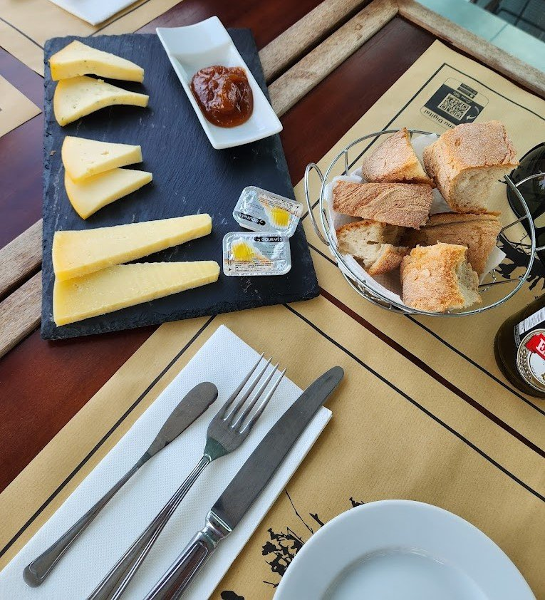
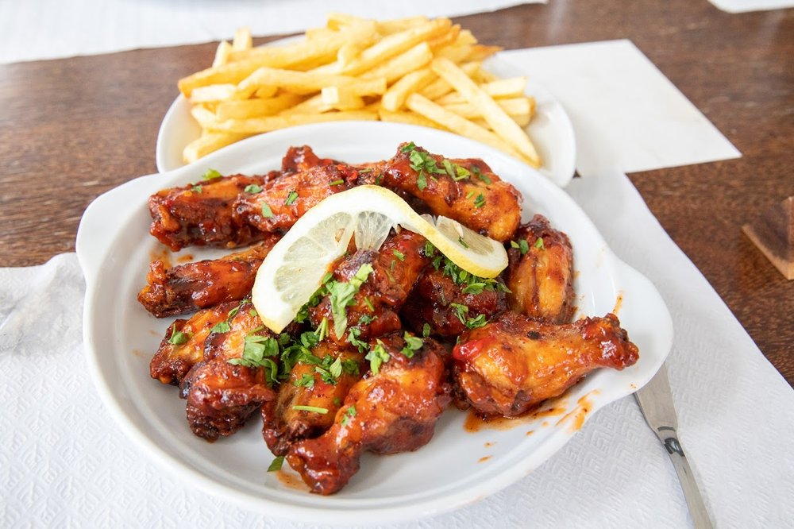

Entradas

Pão d'Alho
€4.80
Pão torrado com manteiga de alho e ervas.

Tábua de Queijos
€10.00
Seleção de queijos regionais dos Açores com compotas.

Queijo Fresco e Pão
€4.50
Queijo fresco regional dos Açores com Pimenta da Terra e Pão.

Asinhas
€10.00
Seleção de queijos regionais dos Açores com compotas.
Tábua de Queijos
€7.00
Seleção de queijos regionais dos Açores com compotas.
Tábua de Queijos
€7.00
Seleção de queijos regionais dos Açores com compotas.
Tábua de Queijos
€7.00
Seleção de queijos regionais dos Açores com compotas.
Tábua de Queijos
€7.00
Seleção de queijos regionais dos Açores com compotas.
Pratos Principais

Bife à Regional
€12.90
Bife de vaca com molho típico e batata-doce assada.

Peixe Grelhado
€13.50
Peixe fresco da ilha grelhado na brasa com legumes.
Sobremesas

Queijadinha
€3.50
Doce tradicional açoriano feito com queijo fresco.

Pudim de Maracujá
€3.80
Pudim suave com calda de maracujá fresco.